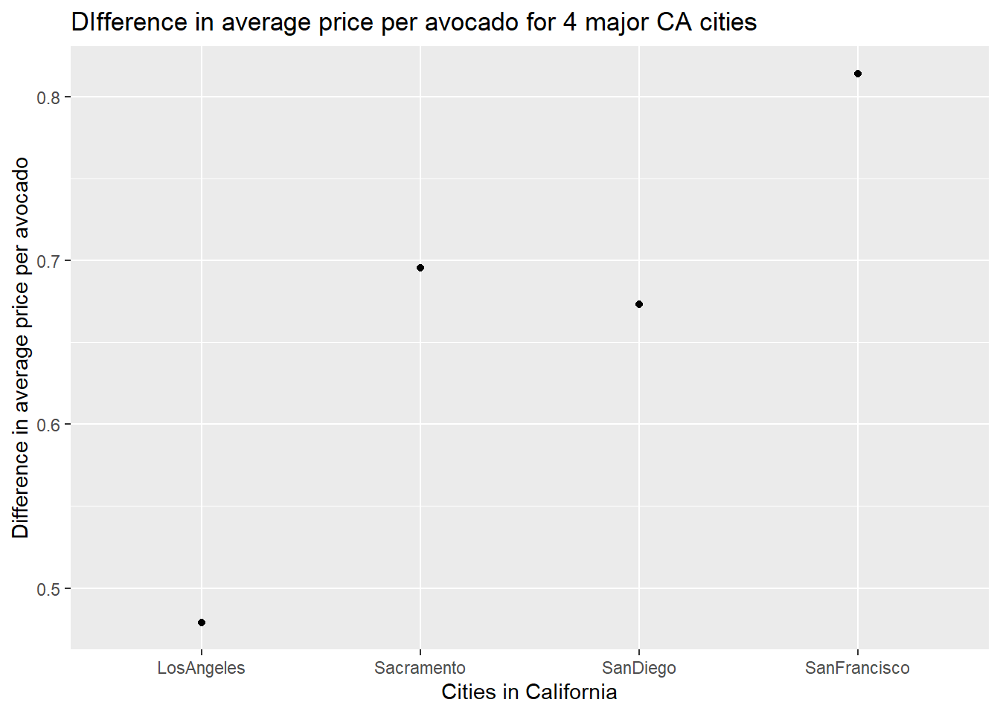
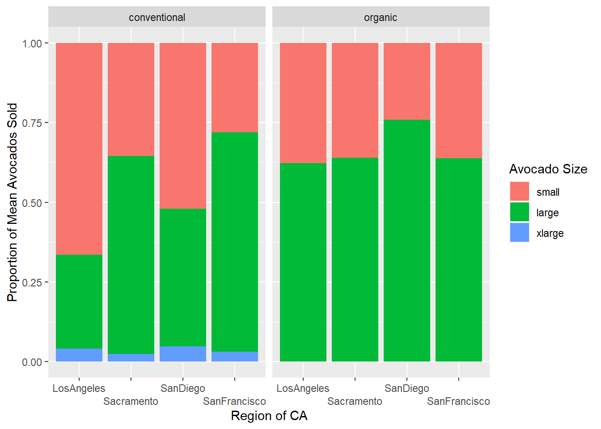

Code
library(tidyverse)
library(here)library(tidyverse)
library(here)avocado <- read_csv(here::here("supporting_artifacts", "Lab4", "avocado.csv")) |>
rename(small = `4046`, large = `4225`, xlarge = `4770`)The dataset summarizes the sales of small, medium, and large avocados sold in cities and regions. The data is further sectioned off by conventional or organic avocados sold. The average price for each avocado can also be found in the data along with the total volume of avocados sold. Observations start from 2013 until 2018 displaying sales of Hass avocados.
regions <- data.frame(region = c("Midsouth", "Northeast", "Plains", "SouthCentral", "Southeast","West", "GreatLakes"))
major_region <- avocado |>
semi_join(regions, by = c("region" = "region"))major_region |>
filter(year == "2017", type == "organic") |>
group_by(region) |>
summarize(tot_small = sum(small)) |>
slice_max(tot_small)# A tibble: 1 × 2
region tot_small
<chr> <dbl>
1 West 1870206.The most small, organic Hass avocados sold in 2017 was in the West region.
avocado |>
separate(Date, c("Year", "Month", "Day"), sep = "-") |>
group_by(Month) |>
summarize(tot_vol = sum(`Total Volume`)) |>
slice_max(tot_vol)# A tibble: 1 × 2
Month tot_vol
<chr> <dbl>
1 02 1760528797.The highest volume sold was in the month of February.
nonmetro <- data.frame(region = c("Midsouth", "Northeast", "Plains", "SouthCentral", "Southeast","West", "California", "TotalUS", "GreatLakes", "NorthernNewEngland", "WestTexNewMexico"))
metro <- avocado |>
anti_join(nonmetro, by = c("region" = "region"))metro |>
group_by(region) |>
summarize(mean_vol = mean(`Total Volume`)) |>
slice_max(mean_vol)# A tibble: 1 × 2
region mean_vol
<chr> <dbl>
1 LosAngeles 1502653.mean_total <- metro |>
group_by(region) |>
summarize(mean_vol = mean(`Total Volume`)) |>
arrange(desc(mean_vol))
top_five <- head(mean_total, 5)
semi_join(metro, top_five, by = 'region') |>
ggplot(mapping = aes(x = region, y = `Total Volume`)) +
geom_boxplot() +
labs(title = "Total Popularity by metro area", xlab = "Region (city)"
, ylab = "Average of total volume") +
geom_jitter() +
scale_y_log10() 
The 5 metro areas that sold the most total avocados were Los Angeles, New York,
Dallas Ft Worth, Phoenix Tucsonand Houston.
Head function from: https://datascienceparichay.com/article/r-dataframe-first-n-rows/#:~:text=You%20can%20use%20the%20head,to%20the%20head()%20function.&text=If%20you%20do%20not%20pass,of%20the%20dataframe%20by%20default.
ca_city = data.frame(city = c("LosAngeles", "SanDiego", "Sacramento", "SanFrancisco"))
ca_prices <- avocado |>
semi_join(ca_city, by = c("region" = "city")) ca_prices |>
pivot_wider(names_from = "type", values_from = "AveragePrice") |>
group_by(region) |>
summarize(across(.cols = conventional:organic, .fns = mean, na.rm = TRUE)) |>
mutate(diff = organic-conventional)# A tibble: 4 × 4
region conventional organic diff
<chr> <dbl> <dbl> <dbl>
1 LosAngeles 0.976 1.46 0.479
2 Sacramento 1.27 1.97 0.695
3 SanDiego 1.06 1.73 0.673
4 SanFrancisco 1.40 2.21 0.814ca_prices |>
pivot_wider(names_from = "type", values_from = "AveragePrice") |>
group_by(region) |>
summarize(across(.cols = conventional:organic, .fns = mean, na.rm = TRUE)) |>
mutate(diff = organic-conventional) |>
ggplot(mapping = aes(x = region, y = diff)) +
geom_point() +
labs(title = "DIfference in average price per avocado for 4 major CA cities", x = "Cities in California", y = "Difference in average price per avocado")
The California city with the highest difference between average price of organic and conventional was San Francisco while the smallest difference was Los Angeles.
ca_graph <- ca_prices |>
group_by(region, type) |>
mutate(across(.cols = small:xlarge, .fns = mean)) |>
pivot_longer(cols = (small:xlarge), names_to = 'size', values_to = 'average_sales') ggplot(data = ca_graph, mapping = aes(x = region, y = average_sales, fill = factor(size, levels = c("small", "large", "xlarge")))) +
geom_bar(position = 'fill', stat = 'identity') +
labs(Title = 'Graph', x = 'Region of CA', y = 'Proportion of Mean Avocados Sold', fill = "Avocado Size") +
facet_wrap(~ type) +
guides(x = guide_axis(n.dodge = 2)) 
Guide function found in https://ggplot2.tidyverse.org/reference/guide_axis.html.
Reordering stack found in https://stackoverflow.com/questions/47025828/change-the-order-of-stacked-fill-columns-in-ggplot2.